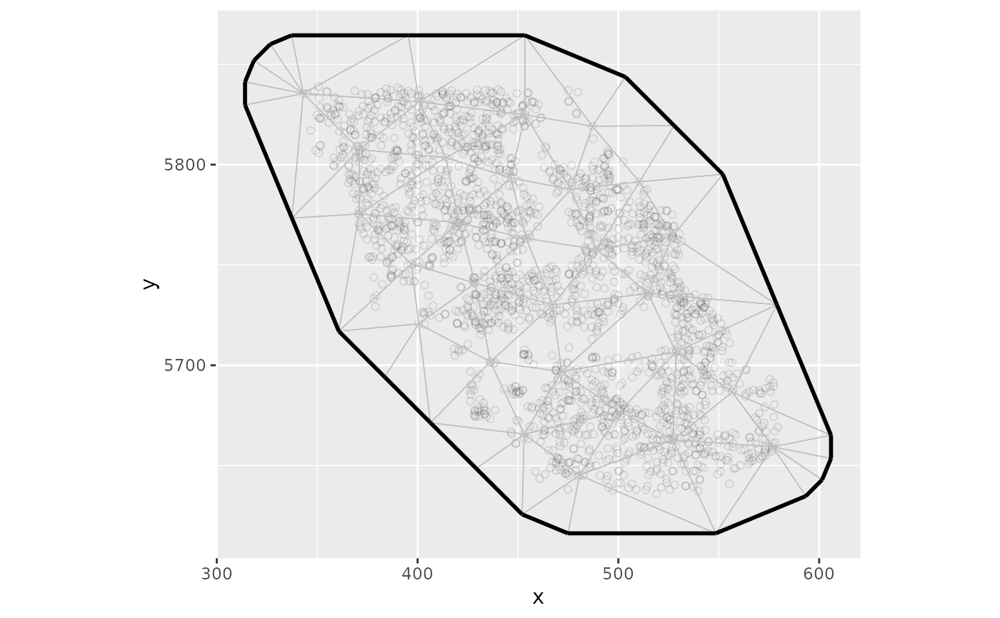
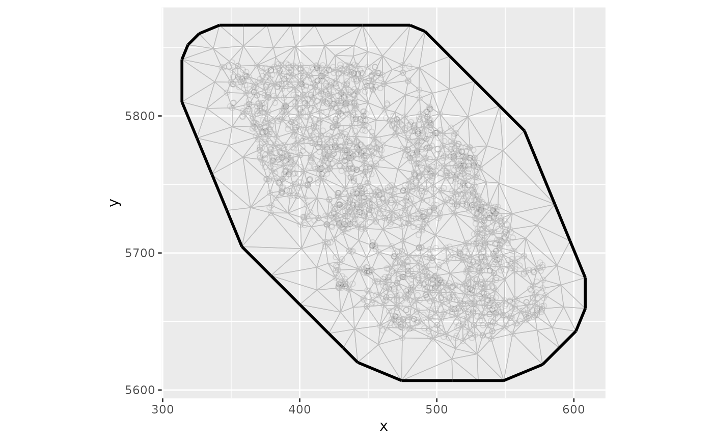
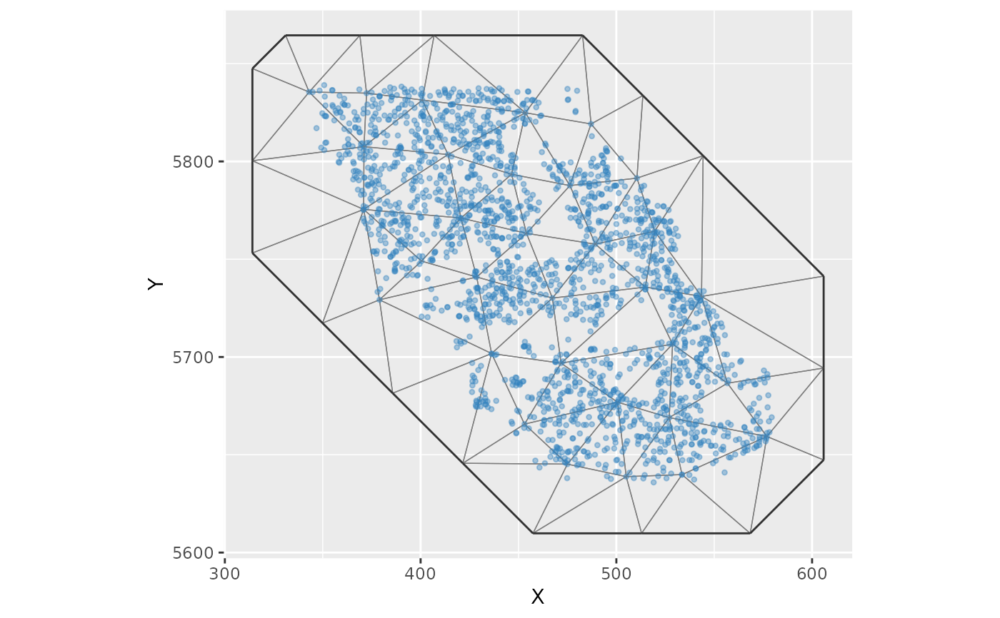
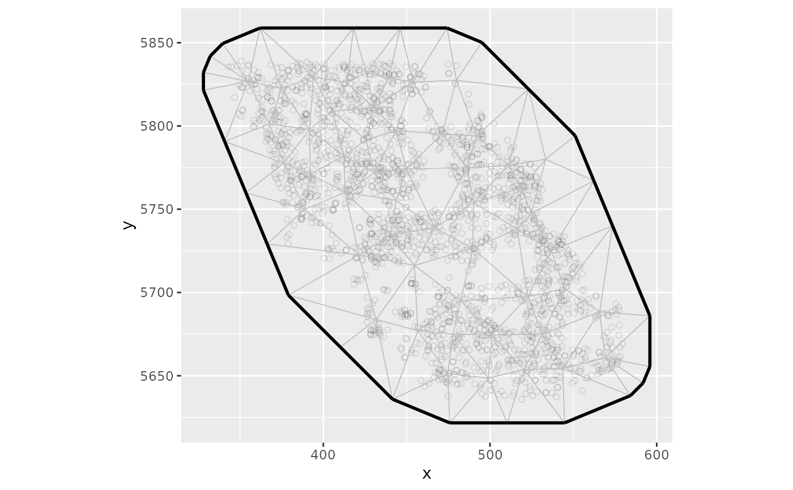
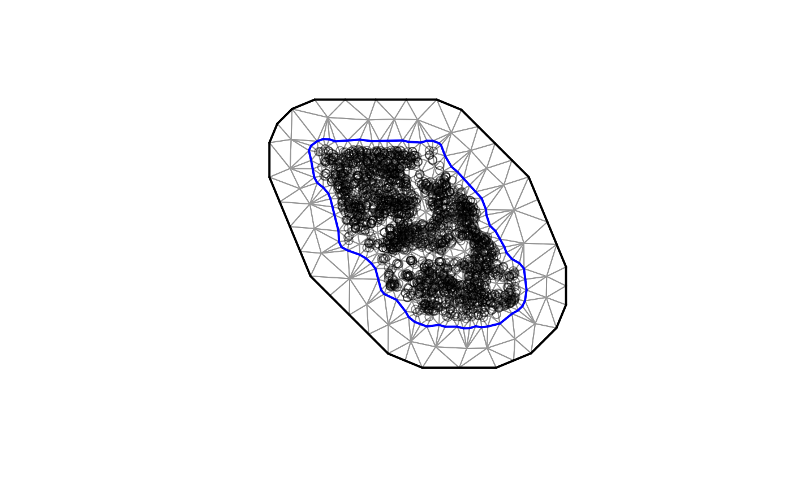

Construct an SPDE mesh for use with sdmTMB.
A data frame.
A character vector of x and y column names contained in
data. These should likely be in an equal distance projection. For
a helper function to convert to UTMs, see add_utm_columns().
Method to create the mesh. Also see mesh argument to supply
your own mesh.
An optional cutoff if type is "cutoff". "The minimum allowed
distance between points in the mesh". See INLA::inla.mesh.create().
Smaller values create meshes with more knots. Points further apart than this
value will receive a separate vertex in the mesh before any mesh refinement.
The number of desired knots if type is not "cutoff".
Random seed. Affects stats::kmeans() determination of knot
locations if type = "kmeans".
Logical or list to pass to INLA::inla.mesh.create().
An optional mesh created via INLA instead of using the above convenience options.
Output from make_mesh().
Passed to graphics::plot().
make_mesh(): A list of class sdmTMBmesh. The element mesh is the output from
INLA::inla.mesh.create() and the element spde is the output from
INLA::inla.spde2.matern().
plot.sdmTMB(): A plot of the mesh and data points.
mesh <- make_mesh(pcod, c("X", "Y"), cutoff = 30, type = "cutoff")
plot(mesh)

# \donttest{
mesh <- make_mesh(pcod, c("X", "Y"), cutoff = 5, type = "cutoff")
plot(mesh)

mesh <- make_mesh(pcod, c("X", "Y"), n_knots = 50, type = "cutoff_search")
#> cutoff = 1.00 | knots = 2640 | ↓
#> cutoff = 100.00 | knots = 26 | ↑
#> cutoff = 10.00 | knots = 205 | ↓
#> cutoff = 31.62 | knots = 49 | ↑
#> cutoff = 17.78 | knots = 89 | ↓
#> cutoff = 23.71 | knots = 61 | ↓
#> cutoff = 27.38 | knots = 53 | ↓
#> cutoff = 29.43 | knots = 50 | ✔
plot(mesh)

mesh <- make_mesh(pcod, c("X", "Y"), n_knots = 50, type = "kmeans")
plot(mesh)

# Defining a mesh directly with INLA:
bnd <- INLA::inla.nonconvex.hull(cbind(pcod$X, pcod$Y), convex = -0.05)
inla_mesh <- INLA::inla.mesh.2d(
boundary = bnd,
max.edge = c(20, 50),
offset = -0.05,
cutoff = c(2, 5),
min.angle = 10
)
mesh <- make_mesh(pcod, c("X", "Y"), mesh = inla_mesh)
plot(mesh)

# }